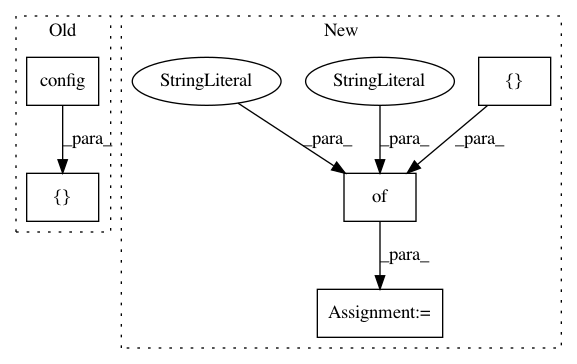

d2b0de6a115a74b633dab330c5f69c27421afae9,examples/2d-measure-accuracy.py,,train,#,120
Before Change
//losses.append([hg.losses.wgan_loss.config(**loss_opts)])
losses.append([hg.losses.lamb_gan_loss.config(**lamb_loss_opts)])
//losses.append([hg.losses.lamb_gan_loss.config(**stable_loss_opts)])
losses.append([hg.losses.lsgan_loss.config(**lsgan_loss_opts)])
//encoders.append([hg.encoders.linear_encoder.config(**encoder_opts)])
After Change
[0.5, 0, -0.5]
]
}
stable_loss_opts = {
"alpha": 0.5,
"beta": [0.5, 0.8],
"discriminator": None,
"label_smooth": 0.26111111111111107,
"labels": [[
0,
-1,
-1
]],
"reduce": "function:tensorflow.python.ops.math_ops.reduce_mean",
"reverse": True
}
//losses.append([hg.losses.wgan_loss.config(**loss_opts)])
//losses.append([hg.losses.lamb_gan_loss.config(**lamb_loss_opts)])
losses.append([hg.losses.lamb_gan_loss.config(**stable_loss_opts)])
//losses.append([hg.losses.lamb_gan_loss.config(**stable_loss_opts)])
In pattern: SUPERPATTERN
Frequency: 3
Non-data size: 5
Instances
Project Name: HyperGAN/HyperGAN
Commit Name: d2b0de6a115a74b633dab330c5f69c27421afae9
Time: 2017-02-28
Author: mikkel@255bits.com
File Name: examples/2d-measure-accuracy.py
Class Name:
Method Name: train
Project Name: HyperGAN/HyperGAN
Commit Name: 0e26a337bd0808e85152ccddd8d1fd29f24784e9
Time: 2017-02-26
Author: mikkel@255bits.com
File Name: examples/2d-measure-accuracy.py
Class Name:
Method Name: train
Project Name: HyperGAN/HyperGAN
Commit Name: f91e7ffdcb2cba161c6195cf8aefc8888a2e3527
Time: 2017-02-24
Author: mikkel@255bits.com
File Name: examples/2d-measure-accuracy.py
Class Name:
Method Name: train